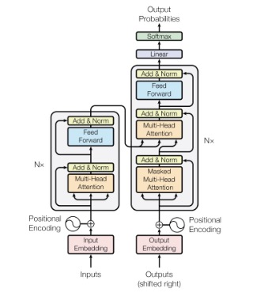
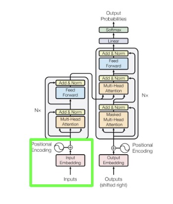
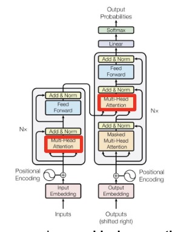
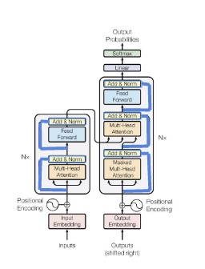
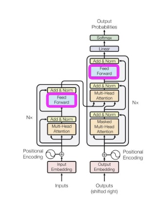
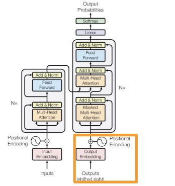
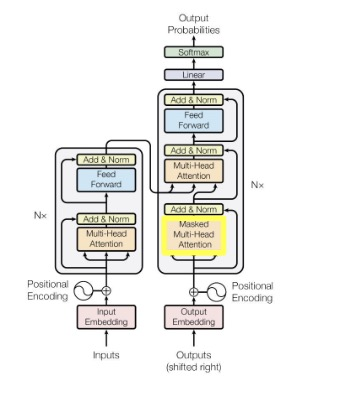
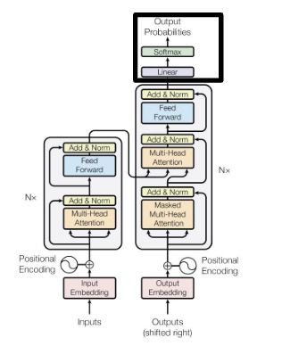
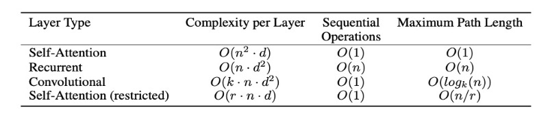

Attention Is All You Need
Annotated by: Noah Schliesman
Published on: by Ashish Vaswani, Noam Shazeer, Niki Parmar, Jakob Uszkoreit, Llion Jones, Aidan N. Gomez, Łukasz Kaiser, and Illia Polosukhin
Abstract
In this hallmark paper, the authors introduce the Transformer architecture, which is based solely on attention mechanisms. They achieve an astonishing state-of-the-art BLEU score of 41.0 after 3.5 days of training on eight GPUs, boasting an improvement by over 2 BLEU.
Introduction
Recurrent Neural Networks (RNNs), Long Short Term Memory (LSTM) Units, and Gated Recurrent Units (GRUs) have been successful in sequence modeling problems such as language modeling and machine translation—particularly those following an encoder-decoder architecture. Such methods still struggle from memory constraints and a limitation of parallelization in sequential computation. While previously attention mechanisms have been used as part of a RNN, the authors propose a model that solely relies on an attention mechanism to draw global dependencies between input and output, leading to a stark improvement in parallelization.
Background
Many efforts have been made to utilize the parallelization of Convolutional Neural Networks (CNNs) in computing hidden representations in parallel. Such methods fail to learn long-term dependencies between distant input/output positions. The computational complexity for processing a sequence in such architectures grows linearly with the sequence length, resulting in operations. The Transformer reduces this complexity to a fixed number of operations for any sequence length with a complexity of . This reduction requires the averaging of attention positions, which reduces the effective resolution. With multi-head attention, however, the model can attend to different parts of the sequence from multiple perspectives, effectively learning different aspects of the input representation.
Self-attention involves each word in a sentence looking at every other word to decide which ones are important for understanding the meaning. In other words, attention relates “different positions of a single sequence in order to compute a representation of the sequence”.[1] The Transformer solely relies on self-attention, which models human sentence comprehension by considering the significance of words and their syntactic and semantic relationships.
Model Architecture
The Transformer follows an encoder-decoder structure. Such architectures have been successful in the past, but again lack in parallelizability. I’ll provide the figure the authors gave, and explain each part of the network.

Let’s begin with some intuition for the model. Consider a training corpus as analogous to a collection of books in a library. Similarly, our Transformer is like a new librarian with little knowledge about these books. When visitors ask a Query, the librarian doesn’t initially know what to search for. Similarly, the librarian likely won’t be able to find the Keys (or identifying features) of each book. Lastly, the librarian likely struggles to find the best Values (or relevant information) in each book. As the librarian is trained, it learns to pay attention to the right features:
- Queries: the librarian gets better at understanding what visitors are asking for by learning to interpret the queries more accurately with attention.
- Keys: the librarian improves in identifying the most relevant books by learning to recognize the identifying features that match the queries.
- Values: the librarian becomes proficient in extracting the most useful information from the relevant books by learning the relevant context.
Now we can formalize this approach. Let’s start with the notion of a query. Let be a query sequence of length . Assuming the source is natural language, we can convert each word using a word representation method.
Such a problem has been studied for decades and is still highly relevant: Latent Semantic Analysis (LSA) concerns Term Frequency (TF-IDF) using Single Value Decomposition (SVD), Latent Dirichlet Allocation (LDA) approximates topics with a Dirichlet distribution, Variational Inference minimizes the Kullback-Leibler (KL) divergence in the form of maximizing the Evidence Lower Bound (ELBO), and Gibbs sampling iteratively samples each variable from its conditional distribution given the current value of other variables. In 2013, researchers at Google developed Word2Vec, which transforms each word individually based on the surrounding words in the training corpus (i.e. CBOW and Skip-Gram).[2] Such is discussed in my comments on Word2Vec, so please check those out.
In Transformers, embeddings are learned as part of the training process. We can tokenize words using Byte Pair Encoding (BPE), which initializes corpus character vocabulary, counts pair frequencies, merges the most frequent pair, updates vocabulary, and repeats.[3] It’s a really elegant but simple method, but new approaches have been suggested. In 2020, Google Research published a paper on dynamic programming encoding for subword segmentation, which achieves superior BLEU scores by 0.55.[4] We now have a set of tokens (subwords), which can each be encoded into a learnable embedding matrix.
For each token index, the embedding matrix has a corresponding row,
\[ e_i = E[t_i] \]
From here, we add a positional encoding term to each embedding row. Given a position and dimension index,
if is even,
\[ PE_{i} = \sin(\frac{pos}{10000^{2i/d_{model}}}) \]
if is odd,
\[ PE_{i} = \cos(\frac{pos}{10000^{2i/d_{model}}}) \]
Thus, we’ve shown the following marked in green,

From here, the encoder maps symbolic representations (tokens) into high-dimensional continuous encodings that capture the subtle similarities between tokens using self-attention. The decoder receives this high-dimensional encoded representation and, when combined with the partial output sequence generated so far, computes an attention score to output symbols (tokens) one at a time.
The decoder requires masking to ensure the prediction for each position in the output sequence is based only on the positions that have already been generated, not on any future positions. This ensures the model is autoregressive, which entails that the model generates each element of the sequence one at a time, and each element is conditioned on previously generated elements.
Instead of just two sublayers, the decoder has an extra sublayer which performs multi-head attention over the encoder output. Let’s dive into this attention mechanism now. If you haven’t already, check out my primer on Attention and Transformer Architectures.
The authors note that the encoder is composed of identical layers, each with sublayers (one multi-head self-attention layer and one positional dense feed-forward neural network (FFNN)). Let’s start with the attention layer.
Generally, the first step is to extract a query, value, and key matrix, which can simply be learned through respective parametrizable transformation weight matrices,
\[ q_i = W_q z_i \]
\[ k_i = W_k z_i \]
\[ v_i = W_v z_i \]
Additive attention involves learning an attention score through concatenating the query and key vectors and passing to a FFNN with a single layer, whereas dot-product attention was introduced as a simpler measure using dot-product similarity.
Additive attention can be formalized as using a FFNN with a single hidden layer to compute attention weights within a corpus.[5] If you’re interested, I’ve written a piece on the architecture's inception, for a more detailed approach please check it out.
Given a query vector, key vector, and value vector, additive attention starts by concatenating the query and key vectors . If and are the learnable weight matrices and bias vectors respectively, this concatenated vector is passed through a FFNN with a hidden layer as,
\[ h_t = \tanh(W_a[Q; K] + b_a) \]
In turn, the hidden layer output is projected to a scalar with learnable weight vector and bias,
\[ e_i = v_a^T h_t + c \]
This scalar is simply passed through a softmax to obtain the normalized attention weights,
\[ \alpha_i = \frac{exp(e_i)}{\sum_j exp(e_j)} \]
The context vector is simply the weighted sum of attention weights and value vectors,
\[ context_i = \sum_{j=1}^{m} \alpha_{ij} v_j \]
Dot-product attention computes attention weights by normalizing the dot product of the query and key vectors. For a set of query vectors and key vectors with dimensionality, the dot product is simply,
\[ e_i = q_i^T k_i = \sum_{j=1}^{d} q_{ij} k_{ij} = (W_q z_i)^T (W_k z_i) = (QK^T)_{ij} \]
When the dimensionality of query and key vectors is large, the dot product can grow very large, diminishing training gradients and leading to peaky alignment scores. Optionally (and in the case of Transformers), we scale this alignment score by the square root of the dimensionality of the keys,
\[ e_i' = \frac{e_i}{\sqrt{d}} = \frac{q_i^T k_i}{\sqrt{d}} = \frac{(W_q z_i)^T (W_k z_i)}{\sqrt{d}} = \frac{(QK^T)_{ij}}{\sqrt{d}} \]
Similarly to that of additive attention, we put the dot-product alignment into a softmax to obtain the attention weights,
\[ \alpha_i = \frac{exp(e_i')}{\sum_k exp(e_k')} \]
Again, the context vector is computed as the weighted sum of attention weights and value vectors ,
\[ context_i = \sum_{j=1}^{m} \alpha_{ij} v_j = \sum_{j=1}^{m} \frac{exp(e_i')}{\sum_k exp(e_k')} v_j = \sum_{j=1}^{m} softmax(\frac{(QK^T)_{ij}}{\sqrt{d}}) V_j \]
For weight matrix , we combine each attention head that produces such that our output can be described as,
\[ MultiHead(Q, K, V) = Concat(context_0, context_1, ..., context_m)W_O \]
With only three projection matrices per attention head, dot-product attention requires fewer and simpler operations and can famously be parallelized using multiple attention heads. Thus, the attention mechanism has been illustrated in red,

Around each sublayer, the authors employ a residual connection, which is a shortcut path that skips certain layers in a neural network and allows gradients to flow directly (i.e., mitigating the vanishing gradient problem). In other words, we add the input to a sublayer to the output of that sublayer as ,
\[ Sublayer(x) = x + Sublayer(x) \]
After each sublayer and residual connection addition, the authors invoke layer normalization. This process is motivated to mitigate changes in training input distribution and thereby stabilize the learning process.[6] Let,
\[ \{a_1, ..., a_i\} \in x \] be the input vector of size to a layer
\[ \mu_x \] be the mean of the input
\[ \sigma_x \] be the standard deviation of the input
and \[ \gamma \, \beta \] be learnable parameters for scaling and shifting
The mean is simply calculated over the summed inputs in a layer,
\[ \mu = \frac{1}{H} \sum_{i=1}^{H} a_i \]
Similarly, the variance is also calculated over the summed inputs,
\[ \sigma^2 = \frac{1}{H} \sum_{i=1}^{H} (a_i - \mu)^2 \]
The normalized inputs with zero mean and unit variance are then,
\[ x_i = \frac{a_i - \mu}{\sigma} \]
By introducing scaling and shifting parameters, the model can adjust the normalized output back to a suitable range and in turn ensure gradients are manageable. Thus the normalized layer is represented as,
\[ y_i = \gamma_i x_i + \beta_i \]
Typically, we normalize the positionally-encoded embedding and the multi-head attention output context matrix separately and then add the two. If is an element of the normalized positionally-encoded embedding and is an element of the normalized context matrix,
\[ EncFirst-Layer = z_i + Context_i \]

We’re ready to talk about the FFNN stage of the encoder. The authors use a simple two-layer network with ReLU activations in between, modeled by,
\[ FFN(EncFirst-Layer) = max(0, EncFirst-Layer \cdot W_1 + b_1)W_2 + b_2 \]

From here, we normalize the FFN and add it to the normalized pre-FFNN output ,
\[ EncFirst-Layer = FFN(EncFirst-Layer) + EncFirst-Layer \]
This normalized encoder output is in turn fed into another multi-head attention mechanism, where it interprets keys and values using parametrizable weight matrices,
\[ k_i' = W_k' \cdot Encoder-Output \]
\[ v_i' = W_v' \cdot Encoder-Output \]
To obtain our decoder query, we’re going to have to backtrack a bit. Recall that the decoder is autoregressive, that is, it depends on the outputs. Similar to that of what we did with the inputs, we map each output token into an embedding and apply positional encoding ,
\[ e_O = E_O[t_O] \]
if is even,
\[ PE_{O_i} = \sin(\frac{pos}{10000^{2i/d_{model}}}) \]
if is odd,
\[ PE_{O_i} = \cos(\frac{pos}{10000^{2i/d_{model}}}) \]
\[ z_O = e_O + PE_{O_i} \]

The positionally-encoded embedded output is fed into a multi-headed attention mechanism similar to that of the encoder, except this time it includes a masking matrix to ensure it only attends to the previously generated tokens. Let be a triangular matrix of length , constructed as,
\[ M_{ij} = \begin{cases} -\infty & \text{if } i We then add this mask to the alignment score, \[ e_i' = \frac{e_i}{\sqrt{d}} + M = \frac{q_i^T k_i}{\sqrt{d}} + M = \frac{(W_q z_i)^T (W_k z_i)}{\sqrt{d}} + M = \frac{(QK^T)_{ij}}{\sqrt{d}} + M \]  After normalizing the positionally-encoded embedded output and adding to the normalized masked-attention output, we obtain, \[ DecFirst-Layer = z_O + Context_{O_i} \] From here, we can transform this output into a query using a parametrizable weight matrix, \[ q_i' = W_q' \cdot DecFirst-Layer \] The new queries, values, and keys are then put into another layer, following the format of multi-head self-attention, normalization and addition, feedforward neural network, and lastly normalization and addition to produce the decoder output. The output is passed through a linear layer to project it onto the space of possible output classes. Let and be learnable parameters for such a projection. Logits are produced by, \[ Z = H W_{out} + b_{out} \] To convert the logits into probabilities, we simply apply softmax, \[ P = softmax(Z) = \frac{exp(Z_{ij})}{\sum_{k=1}^{C} exp(z_{ik})} \] In many applications, we can just take the class with the highest probability from the output probabilities matrix, \[ output_i = arg max_j P_i(j) \]  The authors note that Transformers are largely motivated by computational complexity per layer, parallelizability, and path length between long-range dependencies. A side benefit includes the notion that self-attention can yield more interpretable models. I’ve provided the comparison table from the paper below,  A common loss function choice for Transformers is that of cross-entropy loss. Given a sentence, the model can be trained to minimize the distribution between outputted attention and the true attention distribution of the corpus. Given a true label and predicted probability for class of classes, the cross-entropy loss is described as, \[ \mathcal{L} = -\sum_{i=1}^{C} y_i \log(y_i) \] The authors trained on the standard WMT 2014 English-German dataset with 4.5M sentence pairs. Byte-pair encoding yielded about 37k tokens in the target vocabulary. They also trained on the WMT 2014 English-French dataset with 36M sentences, where BPE yielded 32k tokens. Each training batch contained sentence pairs with about 25k source and target tokens. They used 8 NVIDIA P100 GPUs, with a step size of 300k at 0.4 seconds per step. For the optimizer, the authors used Adam with a learning rate varied as, \[ lr_{ate} = d_{model}^{-0.5} \cdot min(step-num^{-0.5}, step-num \cdot warmup-steps^{-1.5}) \] To the output of each sublayer (before addition and normalization), the authors apply dropout. They also apply dropout to the sums of the embeddings and positional encodings in both the encoder and decoder stacks with a rate of 0.1. They also employ regularization via label smoothing with an epsilon of 0.1. To prevent the model from being overconfident in its prediction, label smoothing modifies the target distribution to be a weighted average of the ground truth and a uniform distribution over all possible labels. The ground truth labels are adjusted based on the class size and the smoothing parameter, \[ y_{smooth} = \begin{cases} \frac{\epsilon}{C} & \text{if } i\neq c \\ 1-\epsilon+\frac{\epsilon}{C} & \text{if } i=c \end{cases} \] Astonishingly, the authors outperform state-of-the-art by more than 2.0 BLEU, resulting in a new score of 28.4 BLEU at a fraction of the training cost. They averaged 20 checkpoints with a beam search of size 4 and length penalty alpha = 0.6. The transformer can be trained significantly faster than its recurrent and convolutional counterparts, and attention seems to be a highly effective mechanism of distribution approximation. They mention that future goals include generalizing to images, audio, and video (as well as making generation less sequential).Why Self-Attention
Training
Results & Conclusion
Citations